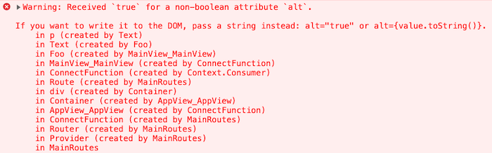

Theme can be stored (or generated) in a js file. For instance, we can keep all of them, in ./themes folder and load, while bootstrapping the application.
In my opinion, the styled-components library has one particularly annoying warning:
"Warning: Received true for a non-boolean attribute."
The first time I ran into this, it took me a while to figure out what was actually going on. The warning is a bit counterintuitive, and the official docs don’t do much to help clear things up.

So, what does this error actually mean?
It means you passed a boolean value to a native DOM attribute that doesn’t expect one. To make it clearer: you passed something like true to an attribute on a built-in HTML element-an attribute that wasn’t designed to accept booleans.
For example, maybe you passed true to the alt attribute of a <p> tag. That’s not valid HTML.
This often happens when you define a styled component like this:
const Text = styled.p`
color: ${(props) => (props.alt ? 'orange' : 'black')};
`;
const Foo = (props) => <Text alt={props.warning}>{props.children}</Text>;
To fix this warning, just rename the alt prop to something custom-anything that doesn’t clash with standard attributes of a <p> tag. That way, React won’t try to pass it down to the underlying DOM element, and the warning will disappear.
You might also be interested in the following posts:
Theme can be stored (or generated) in a js file. For instance, we can keep all of them, in ./themes folder and load, while bootstrapping the application.
The whole logic of styled-components can be described in one "feature request": "Let's manage CSS in js alongside with component core code". The logic behind it is sort of obvious - it will give us the dynamic of js inside of CSS and we'll be able to treat styling as part of component code and not store it in a separate file.
The idea is promising, now let's see what are some of the edge cases. And why is that? Because nothing is ideal in the world.